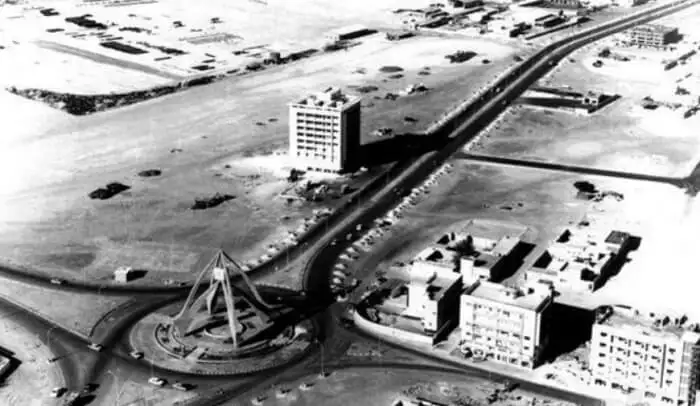

Tucked over the southeast coast of the Persian Gulf, Dubai happens to be the most populous city in the UAE. Once a mere fishing village of not more than 800 people, Dubai has over time emerged as a global metropolitan and a major business hub of the Middle East. Wondering how it changed on such a massive scale? Well, we’ve put together some intriguing pictures to help you witness and compare the old Dubai vs the new one.
Way back in 1833, Dubai had started off as a small settlement by some 800 members of the Bani Yas tribe, who were attracted to the natural harbour created by the creek flowing through Dubai. They turned the area into a small center for fishing and pearling. These people were later joined by the Arabian nomads of the Middle East called Bedouins. They too settled near the creek in small houses known as barastis.
During the 1960s, Dubai’s economy was merely dependent on the revenues generated from trade and oil exploration concessions. The history of Dubai development shows that when a major chunk of revenue obtained from oil reserves started to flow in 1969, Dubai started developing rapidly. Vast sums of cash were thrown into the picture, and major infrastructure like schools and hospitals started developing swiftly. Over the years, it transformed Dubai into the glam and glitzy hub we know today.
